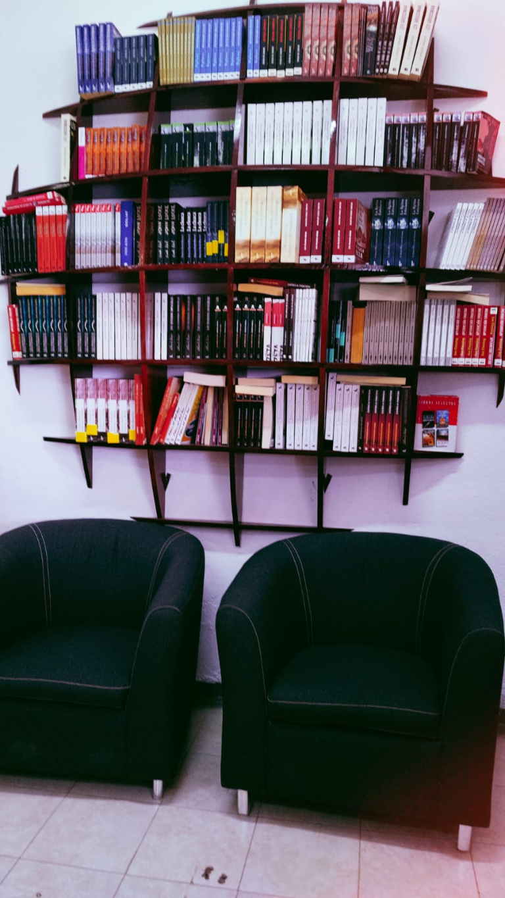

Préstamo de material
Consulta libros y materiales disponibles en la biblioteca escolar.
Un espacio de conocimiento, investigación y crecimiento académico para toda la comunidad estudiantil.
Más que un espacio de libros, un centro de aprendizaje y encuentro
La Biblioteca del CBTis 5 es un espacio para consultar información, estudiar y desarrollar proyectos académicos.
El catálogo digital facilita la búsqueda de libros por título, autor, tema o especialidad.

Recursos para tu desarrollo académico
Consulta libros y materiales disponibles en la biblioteca escolar.
Busca referencias y portadas de libros desde cualquier dispositivo con internet.
Espacios para el trabajo individual y colaborativo.
Apoyo para localizar fuentes y elaborar trabajos de investigación.
Consulta en la biblioteca la disponibilidad de estos servicios.
Actividades académicas, talleres y pláticas para estudiantes.
Busca por título, autor o especialidad. Las portadas se cargan desde Google Books cuando están disponibles.
Controla las existencias de la biblioteca. Los cambios se guardan automáticamente en este navegador.
Usa − para registrar una salida y + para registrar una entrada. Las existencias muestran los ejemplares disponibles para préstamo.
| Libro | Área | Existencias | Actualizar |
|---|
Aquí aparecen los libros prestados y quién los tiene. Al devolverlos, selecciona el botón de devolución.
| Libro | Estudiante | Fecha de préstamo | Fecha de devolución | Acción |
|---|